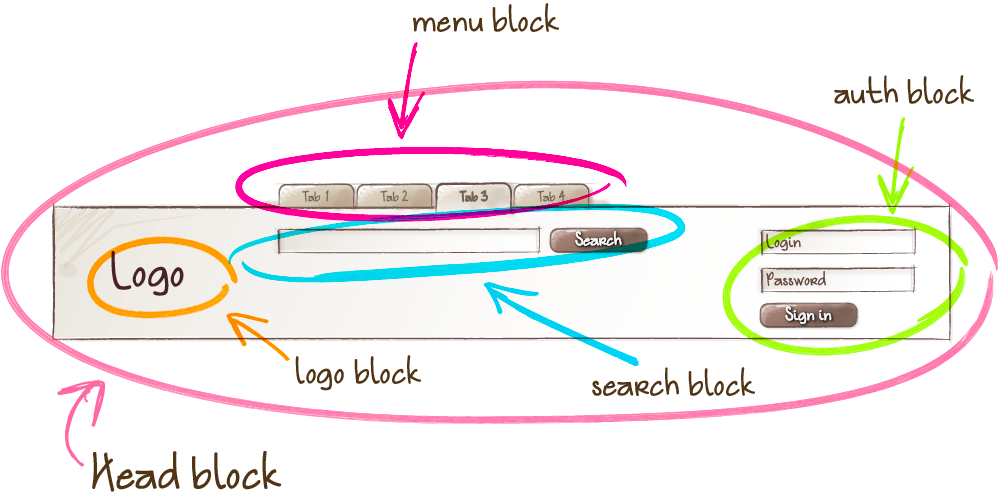

Методология БЭМ создана в Яндексе для разработки сайтов, которые надо делать быстро, а поддерживать долгие годы. Она позволяет создавать расширяемые и повторно используемые компоненты интерфейса.
Блок
Элемент
Модификатор

Блоки могут быть вложены в любые другие блоки
Блоки можно перемещать в пределах одной страницы, разных страниц или проектов
Повторное использование блоков
Элемент
составная часть блока, которая не может использоваться в отрыве от него
Когда блок? Когда элемент?
Если фрагмент кода может использоваться повторно и не зависит от реализации других компонентов страницы, необходимо создавать блок
Если фрагмент кода не может использоваться самостоятельно, без родительской сущности (блока), в большинстве случаев создается элемент
Модификатор - БЭМ-сущность, определяющая внешний вид, состояние и поведение блока или элемента
Использование модификаторов опционально
.block
.block__elem
Миксы
Способ использования разных БЭМ-сущностей на одном DOM-узле
Миксы позволяют:
совмещать поведение и стили нескольких БЭМ-сущностей без дублирования кода;
создавать семантически новые компоненты интерфейса на основе имеющихся БЭМ-сущностей